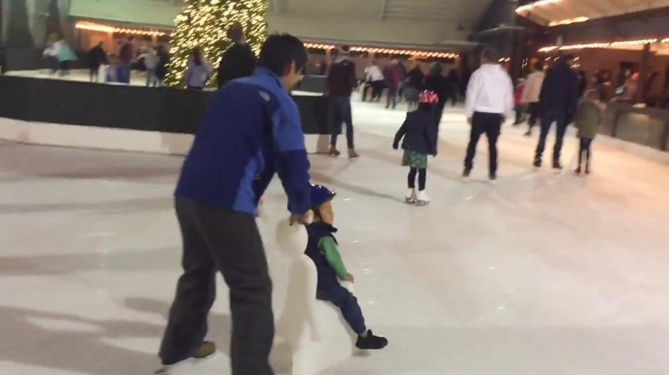
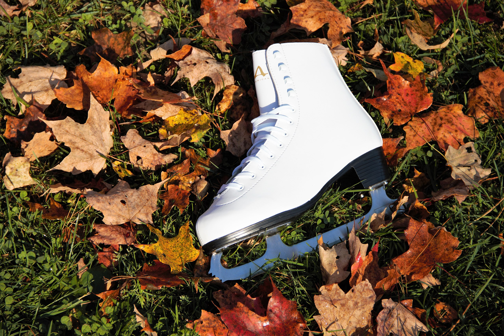
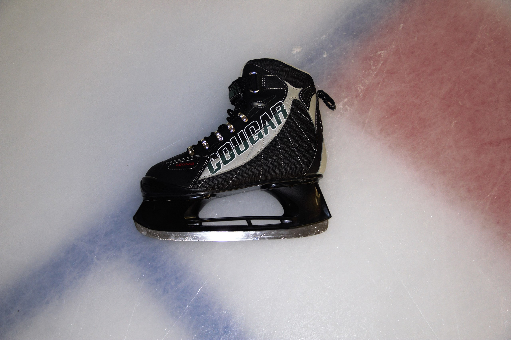
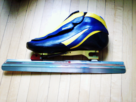
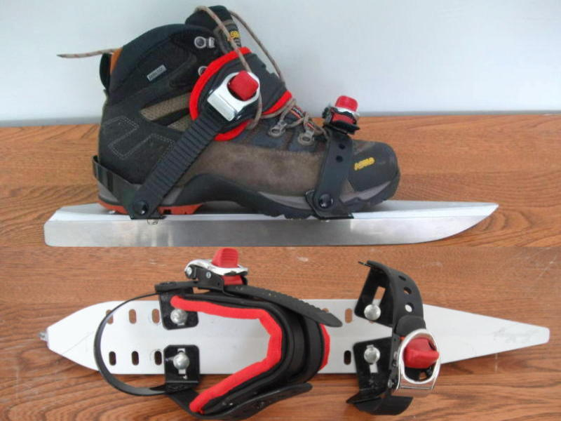
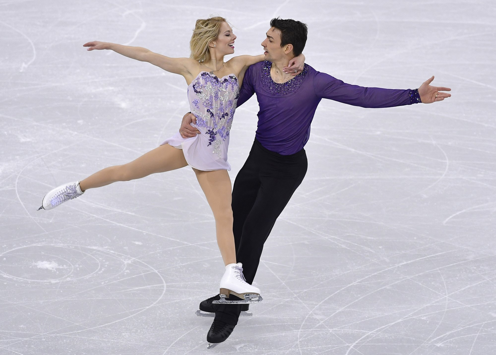

Ice Skating
Ice Skating
 Ice Skating is one of the most popular sports in winter. Ice skating is not only for adults, kids age 2 and above can enjoy it as well. Ice skating has lots of fun, come and enjoy it.
{kind=link}
Shoes
Almost all the ice skating court provide ice skates shoes renting service. But you can buy one pair also, it's around 30$ per pair. There are five kinds of ice-skating shoes for different purples, figure skates, hockey skates, bandy skates, racing skates and touring skates. If you are new to ice skating and don’t have any plan to play Hockey, you should try figure skates. If you have plan to play hockey, try hockey skates, which is the easiest one. Racing skates is not suitable for new player, but like its name, it’s fast.
 Figure skates are suitable for new player for skating and after you are good at ice skating, you can play figure skating. I believe You will love your figure skates.
{kind=link}
Figure skates are used in the sport of figure skating. Unlike hockey skates, they have toe picks on the front of the blade, which are usually made out of stainless steel or aluminium with a steel runner. The toe pick has a variety of uses, but is most commonly used for certain jumps in figure skating, such as the Lutz jump and toe loop or starting a backspin. Figure skating boots are typically made of several layers of leather and the leather is very stiff to provide ankle support. In addition, the figure skate's blade is curved, allowing for minute adjustments in balance and weight distribution.
The base of the figure-skate blade is slightly concave, or "hollow ground." The hollow, which runs the length of the blade, creates two edges, which come in contact with the ice. The forward part of the blade, the toe-rake, is saw-toothed and is used for jumps and spins on the toes.[6]
 As its name, hockey skates are for playing hockey. This kind of skates are the easy one for new skater. You can buy one as your first skates and learning ice skating with them.
{kind=link}
Hockey skates are used for playing the games of ice hockey and ringette. The boot is generally made of molded plastic, leather (often synthetic), and ballistic nylon. Skates used in competitive hockey rarely use molded plastic for the upper boot, as this results in limited mobility. The skates used by goaltenders are cut lower in the ankle than a normal hockey skate and the boot sits closer to the ice for a lower center of gravity. The boot itself is encased in hardened plastic, called a "cowling", protecting the toe, ankle and heel from the force of the shot puck. The blade is usually longer and has less rocker (curvature to the blade) to make it easier for the goalie to move side to side in the crease. Goalie skates lack a tendon guard. Unlike regular hockey skates, goalie skates are usually protected by a synthetic material covering the toe-part of the skate. This is to prevent damage from the puck. The blade of the goalie skate is not as useful in turning as regular hockey skates, because the blade is rockered less, thus making turns slightly inconvenient. The material used to make the boot of the goalie skate is a harder synthetic material than regular hockey boots. Sharpening ice hockey skates plays a key factor in a player’s ability to skate and players will sharpen their skates hundreds of times throughout their career. Similar to figure skates, the blade is hollow ground in cross section, creating two edges that contact and cut into the ice, allowing increased maneuverability. The blades are sharpened with round-edged grinding wheels that create the two edges. The wheels grind out a hollow semi-circle along the length of the underside of the blade, forming the sharp edge on each side. Skate blade sharpness is measured by the thickness of the round-edged grinding wheel being used, the smaller the radius, the sharper the edge will be. The sharpness chosen by a player is based completely upon preference, not player size or level of play. While a one-half-inch (13 mm) radius of hollow is the most common and standard sharpening for most players, the standard radius of hollow for goalies is three-quarters inch (19 mm).[citation needed]
 Bandy skates are used for playing the game of bandy. The boot is generally made of leather (often synthetic). The boot is lower than the hockey version, often not covering the ankles. All bandy skates are designed such that they will not cause injury to an opponent. The blade is generally an inch longer than the hockey skates, allowing for higher speeds at the large bandy rink.[7] The Russian bandy skates have an even longer blade and a very low cut shoe.
Bandy skates are used for playing the game of bandy. The boot is generally made of leather (often synthetic). The boot is lower than the hockey version, often not covering the ankles. All bandy skates are designed such that they will not cause injury to an opponent. The blade is generally an inch longer than the hockey skates, allowing for higher speeds at the large bandy rink.[7] The Russian bandy skates have an even longer blade and a very low cut shoe.
 Racing skates if not for new ice skater, but them can be fast. You will like this one if you like speed. You can buy one after you familiar with ice skating.
{kind=link}
Racing skates, also known as speed skates, have long blades and are used for speed skating. A clap skate (or clapper skate) is a type of skate where the shoe is connected to the blade using a hinge. Short track racing skates have a longer overall height to the blade to allow for deep edge turns without the boot contacting the ice. For better turning ability, racing skates may have a radius, from 8 metres (26 ft) for short track to 22 metres (72 ft) for long track.[8] Racing skates have a completely flat bottom.[9] There is no hollow, only a squared off bottom with two edges. This improves glide time, by not cutting into the ice.
 Touring skates (or Nordic skates) are long blades that can be attached, via bindings, to hiking or cross-country ski boots and are used for long distance tour skating on natural ice. The blades are approximately 50 cm (20 in) long with a radius of curvature (or rocker) of about 25 m (82 ft). The blades are from 1 to 1.5 mm (0.04 to 0.06 in) wide, with a flat cross-section. The length and long radius of the blades makes touring skates more stable on uneven natural ice than skates with shorter, more rockered blades. Since tour skating often involves walking (Kluning) between lakes or around unskateable sections, the fact that the blades can be easily removed from one's boots is an asset. Thus, these skates are often called kluunschaats in the Netherlands.[10]
{kind=link}
Courts
 Here are some great spots to take the kids ice skating this year.
{kind=link}
Silion Valley
Winter Lodge (Palo Alto) - Outdoor skating fun from Sept. through mid-April in Palo Alto. See website for hours. $12, plus $5 skate rental. 3009 Middlefield Road.
Boardwalk Holiday Ice (Santa Cruz) - The Santa Cruz Beach Boardwalk turns its beachside entertainment venue into a winter wonderland with an ice skating rink to maximize holiday fun. Nov. 17-Jan. 26. See website for hours. $14.95 per hour with skate rental. 400 Beach St.
Downtown Ice (San Jose) - Ice skating under the stars (and the palm trees) in downtown San Jose. Nov. 16-Jan. 26. See website for hours. $15-17 with skate rental. Circle of Palms, 120 South Market St.
Gilroy Gardens Holiday at Night (Gilroy) - Ice skating is on the menu all month as this children’s theme park celebrates the holidays. Dec. 1-2, 7-9, 14-23 and 26-30. 4-9pm. Dec. 31. 4pm-12am. $20-25. 3050 Hecker Pass Highway.
Ice Center (Cupertino) - Year-round skating fun at Vallco Shopping Center. See website for hours. $14 with skate rental. 10123 N. Wolfe Road.
Santa Clara Ice (Santa Clara) - Outdoor skating in Central Park with public skating and lessons available. Nov. 20-Jan. 15. $10-15, ages 3 and under FREE. 969 Kiely Blvd.
Solar4America Ice (San Jose) - The official practice rink for the San Jose Sharks has daily public skating hours. See website for hours. $8-12, plus $5 skate rental. 1500 S. Tenth St.
Winter Fest (Santa Clara) - Enjoy the season at this month-long celebration that includes ice skating in front of the iconic carousel. Select days Nov. 23-Dec. 31. See website for hours. Included with admission of $26 and up. 4701 Great America Parkway, Santa Clara.
Peninsula
Nazareth Ice Oasis (Redwood City) - This year-round rink offers public skate sessions, a skating school and adult and youth hockey. Check website for hours; call for prices. 3140 Bay Road, Redwood City. 650-364-8090.
Nazareth Ice Oasis (San Mateo) - This year-round rink has public skating hours, lessons and adult and youth hockey. Check website for hours; call for prices. 2202 Bridgepoint Parkway. 650-574-6033.
San Mateo on Ice (San Mateo) - This outdoor rink features 9,000 square feet of real ice. Open Nov. 10-Jan. 13. Check website for hours. $15 per person, including skate rental. Central Park, 50 E. Fifth Ave., San Mateo. 707-253-1324.
San Francisco
California Academy of Sciences Holiday Ice Rink - Enjoy science and skating in the same day. Nov. 16-Jan. 6. Check website for times and costs. Golden Gate Park, 55 Music Concourse Drive. 415-379-8000.
Holiday Ice Rink - Billed as one of the largest outdoor ice rinks in the Bay Area, this facility is surrounded by shops and restaurants. Opens Nov. 5. 10am-9:30pm Sun.-Thu. 10am-11:30pm Fri.-Sat. $12 general, $7 under age 9; skate rental $5. Embarcadero Plaza, adjacent to Four Embarcadero Center and across from the Ferry Building. 415-837-1931.
Safeway Holiday Ice Rink (Union Square) - This popular rink’s season kicks off Wed., Nov. 7 at 9:30am with local celebrities and festivities. Rink is open daily 10am-11:30pm through Jan. 21. $18 adults, $13 children under 9, including skate rental. 333 Post St. 415-781-2688.
Winter Park at Civic Center - This new rink modeled after the internationally famous Wiener Eistraum in Vienna will have daily open skate sessions plus themed dance and skate parties, a first responders’ celebration, a family-friendly drag queen event and more. Nov. 30-Jan. 6. 12-10pm daily. $20 adults, $15 under 9. Civic Center.
Marin
NorCal Ice (San Rafael) - Formerly known as Marin On Ice, this rink is under new ownership. Nov. 7-Jan. 21. 2-9pm Mon.-Fri., 11am-10pm Sat.-Sun. $15, including skate rental. Northgate Mall, Oak Tree Plaza, 5800 Northgate Drive, San Rafael. 415-640-9570.
East Bay
Alameda County
Iceland Family Night - Come to a family skating session each Tue. evening at Dublin Iceland for all ages to practice their moves on the ice at a special rate. 7:45-9pm. $8 each skater, includes skate rental. Dublin Iceland, 7212 San Ramon Road. 925-829-4445.
Oakland Ice Center - Bring your family and friends to get gliding on the ice at a public open skate, offered multiple times daily throughout each month. Check website for times/dates. $12 ages 13 and older, $11 ages 12 and under; $5 skate rental. 519 18th St., Oakland. 510-268-9000.
The Little Ice Rink - All ability levels can feel comfortable with 4,100 square feet of ice-skating bliss, returning for another year at the South Shore Center. Nov. 3-Jan. 15. 3-10pm Mon.-Fri. 10am-10pm Sat. and Sun. $11-17 ages 9 and up, $7-13 ages 8 and under, $8 Bobby The Seal skating aid. 523 South Shore Center, Alameda. 510-629-1423.
Contra Costa County
Downtown Holiday Ice - Cruise along a 50-by-80-foot ice rink on your skates when Martinez brings back this seasonal affair Nov. 17-Jan. 6, featuring regular hours and special events. Check website for hours and prices. Marina Vista Avenue and Ferry Street. 925-228-3577.
Walnut Creek on Ice - Skaters can kick off the winter season in a partially enclosed ice rink for all ages and skills in downtown Walnut Creek from Nov. 9-Jan. 21. 12-8pm Mon-Thu., 11am-11pm Fri. and Sat., 11am-9pm Sun. $12-15 per person, includes skate rental. Civic Park, 1375 Civic Drive, Walnut Creek. 925-935-7669.
Solano County
Vacaville Ice Sports - Enjoy a year-round ice rink when you head to a public skating session, held daily throughout the month at varying times. Check website. $12-15 adults, $10-13 ages 12 and under. 551 Davis St., Vacaville. 707-455-0225.